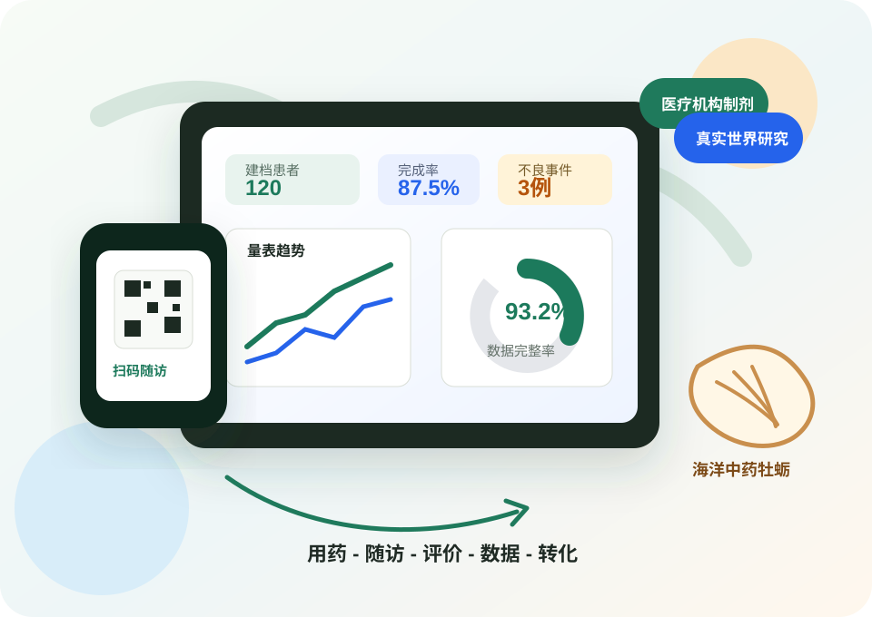
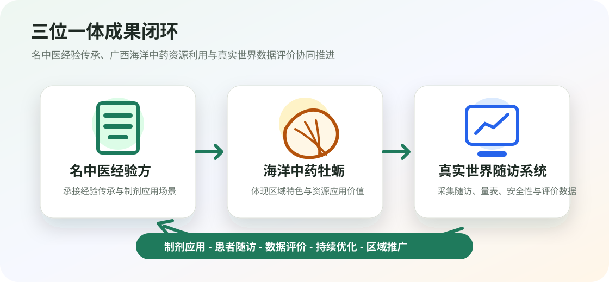
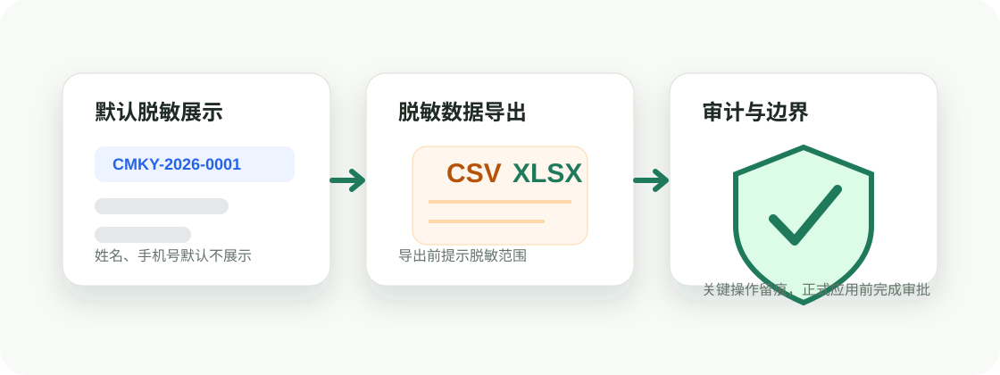

图表化数据驾驶舱
顶部保留核心指标，其他信息以折线图、环形图、柱状图和个人轨迹呈现。
院内制剂应用观察、数字化随访与真实世界证据闭环展示。



| 默认标识 | research_id |
|---|---|
| 脱敏导出 | 不导出姓名和手机号 |
| 导出格式 | CSV、Excel |
| 导出内容 | 随访节点、症状评分、量表分级、依从性、安全性记录 |
| 审计记录 | 数据导出写入审计日志 |
顶部保留核心指标，其他信息以折线图、环形图、柱状图和个人轨迹呈现。

数据统计页默认仅显示研究编号，导出前提示脱敏范围，关键操作写入审计日志。